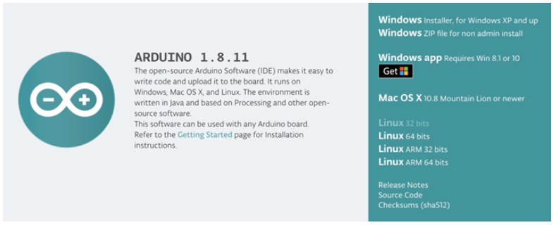
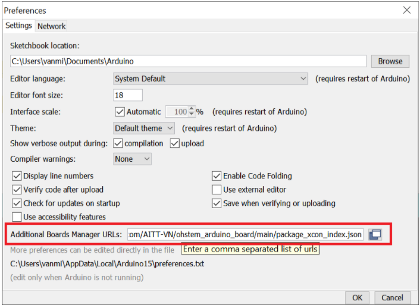

1. Hướng Dẫn Cài Đặt Arduino và xController
Cài đặt Arduino IDE
Bạn có thể tải phiên bản Arduino IDE mới nhất, phù hợp với hệ điều hành của máy tính của bạn tại trang chủ của Arduino (Đường dẫn: https://www.arduino.cc/en/Main/Software)
{kind=link}
Cài đặt board xController trong Arduino IDE
Phần mềm Arduino có thể lập trình cho rất nhiều loại board mạch khác nhau. Tuy nhiên, bạn cần làm thêm một vài bước sau để có thể làm việc với xController:
`Mở phần mềm Arduino đã cài đặt.
2. Vào menu
File > Preferences. Trong tabSettings, mụcAdditional Boards Manager, thêm địa chỉ đường dẫn mô tả thông tin xController như hình và nhấn “OK” ``https://raw.githubusercontent.com/AITT-VN/ohstem_arduino_board/main/package_xcon_index.json ``Sau này, để hỗ trợ nhiều loại board khác, bạn có thể nhập nhiều dòng bằng cách nhấn Enter để xuống dòng cho từng link.
Mở menu
Tools > Board [tên board đang được chọn] > Boards Manager…, nhập Ohstem vào thanh search và chọn boardOhStem Boards by OhStem Educationđược tìm thấy như hình dưới, nhấn vàoInstall, chờ đến khi board được cài đặt hoàn tất. Sau khi cài đặt xong, nhấn vàoClose.
Vào menu
Tools > Board, chọn loại board làOhStem Boards > xControllervừa được cài đặt:
Vào menu
Tools > Portđể chọn Cổng kết nối đến xController (chính là COM Port hiện ra trongDevice Managerchúng ta đã thấy lúc nãy)Ví dụ: Trong máy tính Windows của tác giả, cổng trên Device Manager là
COM12:
- width
480
- align
center
Đối với người dùng hệ điều hành macOS, cổng kết nối sẽ được hiển thị là:
/dev/cu.SLAB_USBtoUART.
{kind=link}
{kind=link}
{kind=link}